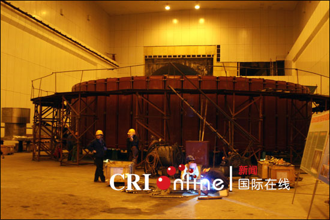
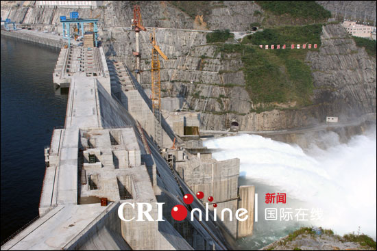
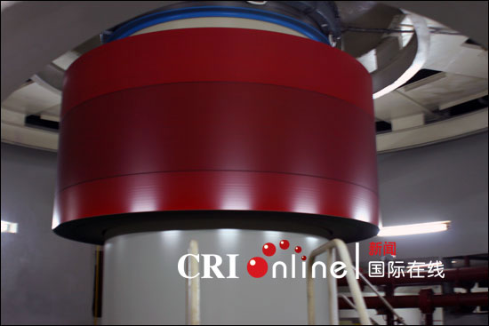
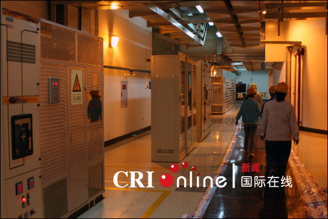
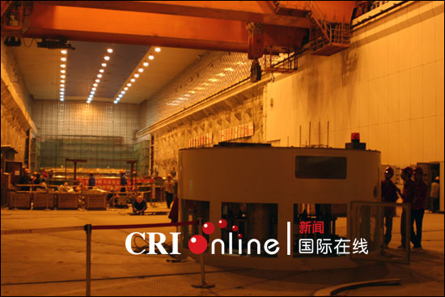
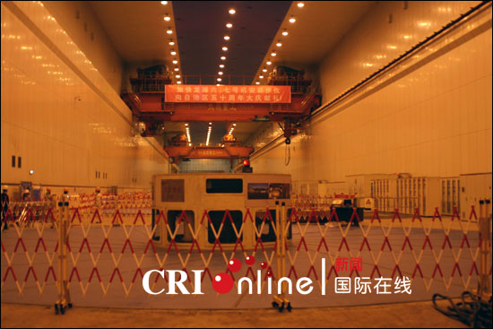
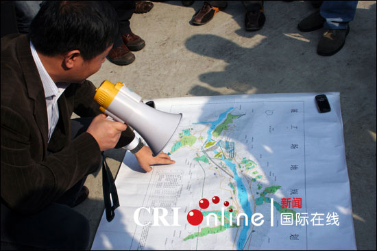

图为龙滩水电站正在建设中的发电机组。
图为龙滩水电站大坝。 国际在线消息（记者 殷亮）：11月11日，中央新闻采访团参观了龙滩水电工程，据水电站相关负责人介绍，目前该水电站发电量已相当于整个广西发电量的一半，是我国目前建成投产的第二大水电工程，并实现了“精品龙滩、绿色龙滩、和谐龙滩”的发展目标。
龙滩水电工程位于红水河上游的天峨县境内，工程总投资300多亿元，规划总装机容量630万千瓦，安装9台70万千瓦的水轮发电机组，年均发电量187亿千瓦时，总库容273亿立方米，防洪库容70亿立方米。
工程主要由大坝、地下发电厂房和通航建筑物三大部分组成。它的建设将创造三项世界之最：最高的碾压混凝土大坝、规模最大的地下厂房、提升高度最高的升船机（最大提升高度179米）。
目前，工程已实现5台机组并网发电运行，6、7号机组年底也将投产，提前一年实现7台机组全部发电目标，整个工程计划于2009年12月全部完工。
龙滩水电工程是红水河梯级开发龙头骨干控制性工程，工程建成投产后，50%以上的电力送往广东，作为广东“十一五”期间的电源点纳入电力电量平衡。

图为龙滩水电站地下发电机。
图为龙滩水电站地下发电设备。
图为龙滩水电站发电机组
图为龙滩水电站内的发电机组。
图为龙滩水电站相关负责人介绍情况。